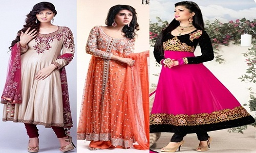

It is Obvious, What to wear in a party is not easy. Every women wants to look Fab and add more beauty and attraction in her personality. That is why we are presenting, Pakistani Chiffon Dresses & Silk Dresses. Select Branded party wears or customized party dresses and we will make customized as per your size, pattern and requirement.

Dressing up for a party is purely a matter of personal fashion sensibilities as every woman has a different idea of the perfect look. Some may prefer a more glamorous look while others may go for an elegant, understated style. The occasion can also determine the type of outfit worn. For wedding parties and other important celebrations, fancier outfits would be the norm while for weekend parties simpler styles would be preferred. The best part about Indian party wear dresses is that you can find one for every occasion and style profile. There is a remarkable collection of choices in terms of colors, designs, fabrics, and outfits.
Click here for Home page.